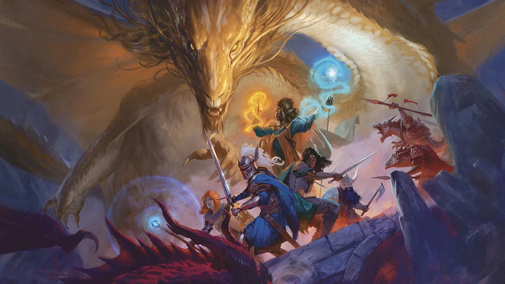
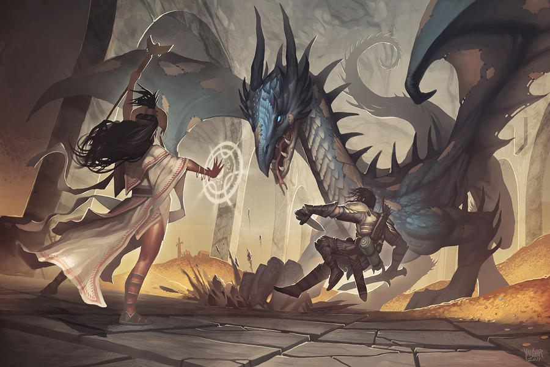

Character Creation

To begin this process you will select a Species and a Class that best
suits the idea you have in mind. After that you will need to assign scores
to six core abilities: Strength, Dexterity, Constitution, Intelligence,
Wisdom, and Charisma. You can determine these scores using different
methods, including Point Buy, where you allocate points based on a defined
system; Standard Array, which uses a predetermined set of scores (15, 14,
13, 12, 10, 8); or by Rolling, where you roll 4d6, drop the lowest die,
and assign the results. The last bit of flavor for your character comes in
the form of a background, whatever your character was doing before
starting the current adventure. These backgrounds can add greater identity
to your characters and help you develop their personallity.
Basic Gameplay
In D&D 5E, most actions are determined by rolling a 20-sided die (d20).
When rolling, you add relevant modifiers based on your ability scores,
proficiency, and other factors. The Dungeon Master (DM) sets a Difficulty
Class (DC) for various tasks, and your total must meet or exceed this DC
for you to succeed. Additionally, the game incorporates an
advantage/disadvantage mechanic: if you have advantage, you roll two d20s
and take the higher result; if you have disadvantage, you roll two d20s
and take the lower result.
Combat

Combat in D&D 5E begins with determining initiative. Each player rolls a
d20 and adds their Dexterity modifier to establish the order of turns. On
your turn, you can typically take one action (like attacking or casting a
spell), one bonus action (if applicable), and move up to your character's
speed. When making an attack, roll a d20 and add your attack modifier. If
the total meets or exceeds the target's Armor Class (AC), the attack hits.
If you hit, you then roll the appropriate dice for damage and subtract the
resulting total from the target's hit points.
Leveling Up
As your adventure progresses, whether through combat or other means your
characters will eventually get the opportunity to level up and gain new
powers and skills. These new skills can help to differentiate your
character from others and give you a wider array of options for
roleplaying and combat.
Dungeons and Dragons is owned and trademarked by Wizards of the Coast